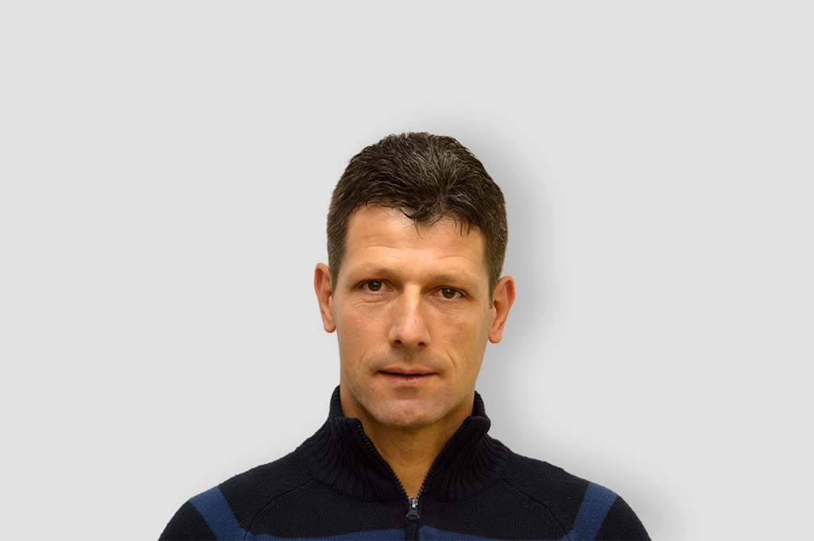

Welcome to Popravilo vodovoda
Zamenjava in popravilo priključkov | Mariborski vodovod
2020.09.07 05:54{{current_weather.dt | moment( atts.date )}} {{current_weather.temp | temp}} ° {{units}} {{day.dt | moment(atts.date)}} {{day.temp | temp}} ° {{day.temp_min | temp}} ° {{units}}
{{current_weather.temp | temp}} ° Vlažnost: {{current_weather.humidity}}%
Oblaki: {{current_weather.clouds}}%
Veter ({{current_weather.wind.deg}}) : {{current_weather.wind.speed}} {{units_wind}} {{current_weather.desc}} {{day.dt | moment(atts.date)}} {{day.temp | temp}}° {{day.temp_min | temp}} °
Motnje v oskrbi
080 19 51Pon - Pet: 15:00 - 6:00
V primeru motenj na vodovodnem omrežju, med delovniki po 15. uri, med vikendi in prazniki.Pogosta vprašanja in odgovori
Več informacijKontakt
Naš naslov:
Mariborski vodovod d.d.
Jadranska cesta 24
2000 Maribor
Pišite nam
info@mb-vodovod.si
Pokličite:
+386 (0) 2 320 77 00
Uradne ure
Uradne ure obračuna vode
Pon - Tor: 7:30 - 12:00
Sre: 7:30 - 16:00
Čet - Pet: 7:30 - 12:00
Malica: 9:30 - 10:00
Uradne ure motenj v oskrbi
Pon - pet: 7:00 - 15:00
Po 15:00 uri: 080 19 51
Zamenjava in popravilo priključkov
Domov Kontakt Zamenjava in popravilo priključkov osenjeMiran Grušovnik
Referent za menjavo priključkov
02 320 77 93
Mobilna številka: 031 732 704Slike uporabnikov
POMEMBNE POVEZAVE
Pridobitev projektnih pogojev in mnenj Prijava stanja Obračun vode Kontakt
V primeru motenj na vodovodnem omrežju, med delovniki po 15. uri, med vikendi in prazniki , pokličite telefonsko številko 080 19 51
Povezave
Kakovost pitne vode O pitni vodi Cenik vode Galerija ObčineUradne ure
Uradne ure obračuna vode
Pon Tor: 7:30 12:00
Sre: 7:30 16:00
Čet Pet: 7:30 12:00
Malica: 9:30 10:00
Uradne ure motenj v oskrbi
Pon pet: 7:00 15:00
Po 15:00 uri: 080 19 51
Kontaktni podatki
MARIBORSKI VODOVOD, javno podjetje d.d.
Jadranska cesta 24
2000 Maribor
TEL: 02 320 77 00
FAX: 02 320 34 60
EMAIL: info@mb-vodovod.si © Copyright 2020 - Mariborski vodovod, javno podjetje d.d. | Aleksandar Jurić Spletno mesto uporablja piškotke za zagotavljanje boljše uporabniške izkušnje in spremljanje statistike obiska. Strinjam se Preberi več Piškotki Close Necessary Always Enabled
